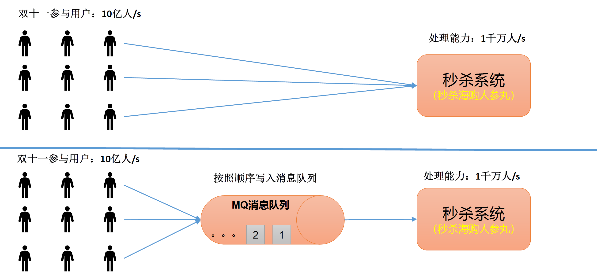
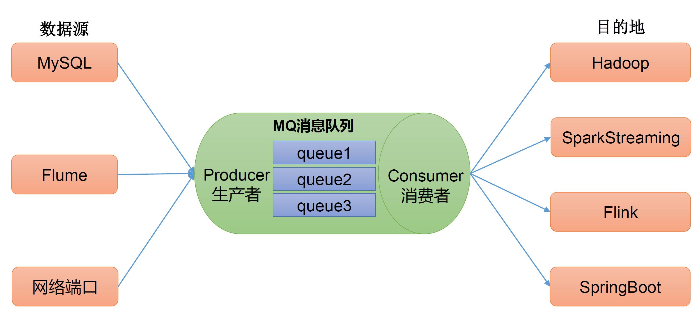
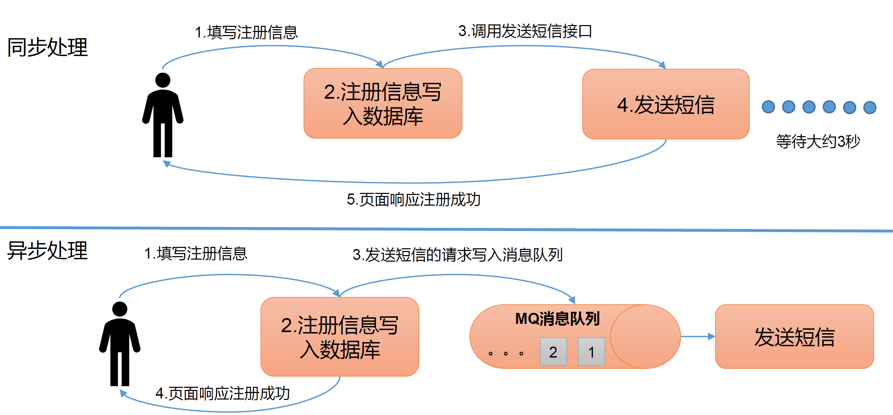
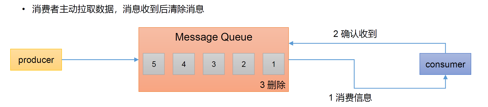
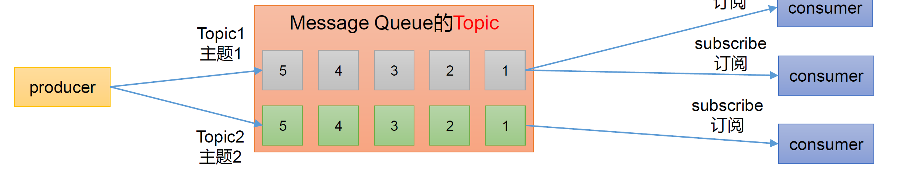
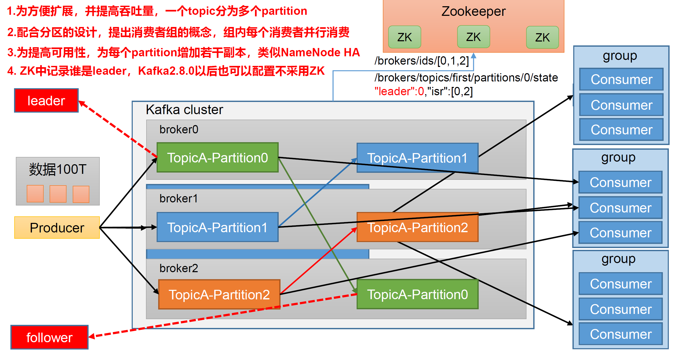

kafaka学习笔记之绪论
业务需要，最近在看尚硅谷的教程，本着好记性不如烂笔头的原则，有了这一系列的文章。
关键词：kafaka
定义
传统定义
kafka是一个分布式的基于发布/订阅模式的消息队列（Message Queue），主要应用于大数据实时处理。
发布/订阅
消息的发布者不会将数据直接发送给特定的订阅者，而是将发布的消息分为不同的类别，订阅者只接受感兴趣的消息。
kafka最新定义
kafka是一个开源的分布式事件流平台，用于高性能数据管道，流分析、数据集成、和关键任务应用。
应用场景
流量缓冲、削峰
- 有助于控制和优化数据流经过系统的速度，解决生产消息和消费消息处理速度不一致的情况。

解耦
- 允许独立的扩展和修改两边的处理过程，只需确保他们遵守同样的接口约束。

异步通信
- 允许用户把一个消息放入队列，但是不立刻处理它，需要的时候再去处理。

消息队列的两种方式
点对点方式
- 消费者主动拉取数据，消息收到后清除消息

发布订阅方式
- 可以有多个topic主题（浏览、点赞、收藏、评论）
- 消费者消费以后不删除数据
- 每个消费者相互独立，都可以消费到数据

基础架构

- producer：消息生产者，就是向kafka broker发消息的客户端。
- consumer：消息消费者，就是向kafka broker取消息的客户端。
- consumer group（CG）：消费者组，多个consumer组成。消费者组内每个消费者负责消费不同分区的数据，一个分区只能由一个组内消费者消费；消费者组之间互不影响。所有消费者都属于某个消费者组。消费者组属于逻辑上的一个订阅者。
- broker：一台kafka服务器就是一个broker，一个集群由多个broker组成。一个broker可以容纳多个topic。
- topic：生产者和消费者逻辑上操作的对象，即生产者向某个topic写数据，消费者从从某个topic读取数据。
- partition：每个topic有多个partition，可以提高broker的负载（生产者可以向同一个topic发送多条数据，数据可以存储在不同的partition）。每个topic在每个partition上的数据是不重复的。partition表现为一个个的文件夹。
- replica：副本。一个topic的每个partition都有若干个副本，副本分为leader和follower，leader是生产者和消费者物理上操作的对象，follower主动从leader拉取更新的内容。当某个分区的leader挂掉后，通过某种算法，将某一个follower升级为leader。